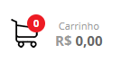

Seja bem vindo, faça seu login ou cadastre-se


Seja bem vindo, faça seu login ou cadastre-se
Rede Grande Sul é ter muitas conquistas! A história do Rede Grande Sul começou em 1978, com a abertura de uma pequena mercearia em Jardim América, Cariacica. Com o passar do tempo, a empresa foi crescendo com foco no trabalho, bom atendimento e no envolvimento familiar. E mais tarde, com a formação de importantes parcerias, nasceu a Rede de Supermercados Extrabom. Hoje, o Extrabom é uma das maiores empresas do setor supermercadista do país, possui o maior número de lojas no Espírito Santo e ocupa o 39º lugar no ranking nacional de faturamento da Associação Brasileira de Supermercados (Ranking da AC Nielsen / ABRAS).
Rede Grande Sul é ter grande estrutura São 23 lojas para lhe atender! 3 lojas em Cariacica 1 loja em Guarapari 8 lojas na Serra 4 lojas em Vitória 2 lojas em Colatina